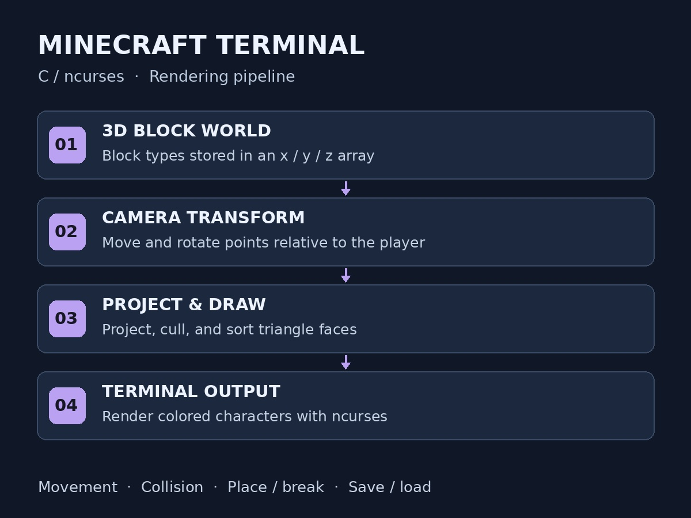

C · ncurses · 3D Graphics
Minecraft Terminal
I developed a Minecraft-inspired 3D game engine in C that renders the world as text in the terminal. It supports player movement, collision detection, placing and breaking blocks, and saving and loading worlds.
I optimized rendering with transformation matrices for terminal graphics at 100+ FPS, using ncurses to display the scene. The project brought together C programming, 3D projection, world data, and interactive controls.
Inside the engine
- The challenge
- Make a 3D block world playable inside a text terminal.
- The approach
- Transform world coordinates into camera space, project the scene into triangles, and use ncurses to draw colored terminal characters.
- The result
- Interactive movement and collision detection, block placement and removal, and worlds that can be saved and loaded.